DDC Micro 2024
2nd Place Overall · Best Technical Presentation
Project Overview
Objective
- Design a manufacturable, repairable micro-UAV with high payload-fraction for DDC Micro 2024.
- Maximise payload fraction while ensuring structural robustness, short assembly time and reliable belly-landing performance.
- Meet DDC rules for hand-launch and compact packaging.
My Role Design Lead
- Fuselage design, structural reinforcement, and manufacturing guidance.
- Topology optimisation for ribs and mounting plates, FEA validation and test planning.
- Oversaw CFD trade studies and wind-tunnel comparisons for airfoil/fuselage selection.
Outcome
- 2nd Place Overall DDC Micro 2024
- Best Technical Presentation
- Payload fraction: 0.635; Empty weight: 0.772 kg; practical thrust measured: 15.07 N.
Design Highlights
- Airfoil S1223 thickened to 120% for increased Cl at low Reynolds numbers.
- Cockpit-type fliteboard fuselage with aeroply reinforcement for impact resilience and easy packing.
- Laser-cut wing skeleton with aluminium rod spars and topology-optimised ribs.
- Robust wing-mount and shear-web placement to improve FOS for competition loads.
Optimisation & Flight Performance
- CFD lift ≈ 22.90 N; bench thrust measured 15.07 N; payload fraction 0.635.
- Topology optimisation reduced rib mass by ~20% while preserving stiffness in key load-paths.
- Manufacturing: laser-cut aeroply, fliteboard panels, fast glue joints for ~30–40 s assembly.
Quick Specifications
- Wing area: 0.17 m²
- Aspect ratio: 5.71
- Take-off weight: 2.122 kg (with payload)
- Payload: 1.35 kg
- Wing configuration: trailing-edge tapered
- Primary materials: fliteboard, aeroply, aluminium spars
Key Lessons Learned
- S1223 thickening was an efficient trade for lift at micro-scale Reynolds numbers.
- Topology optimisation + conventional reinforcements provided a strong, lightweight skeleton.
- Designing for quick field assembly and easy repair improved the team's test throughput.
Gallery
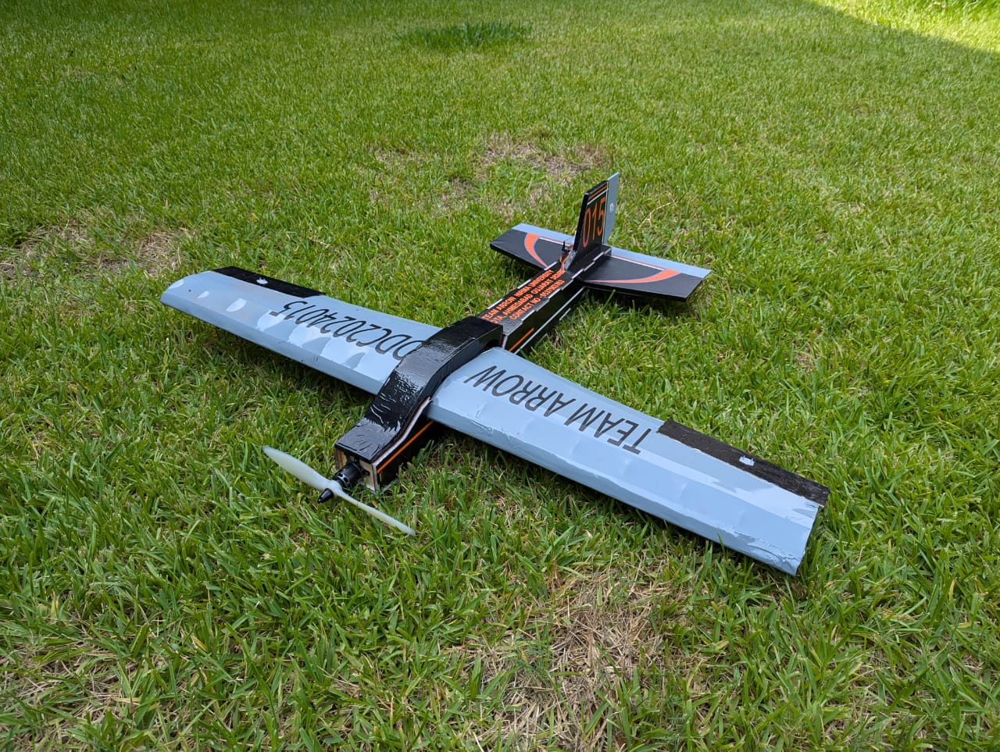
Detailed Design Report
Wing
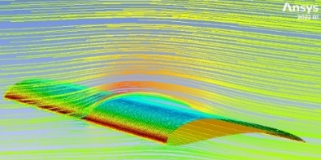
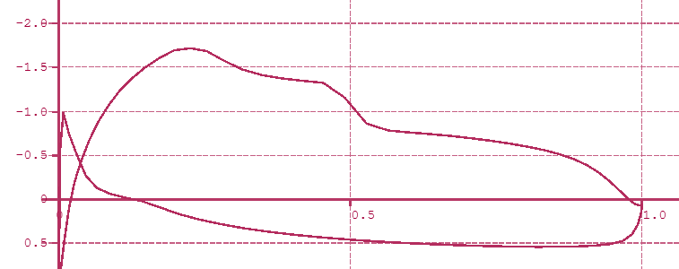
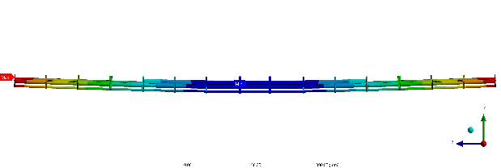
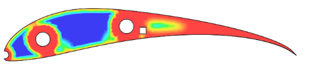
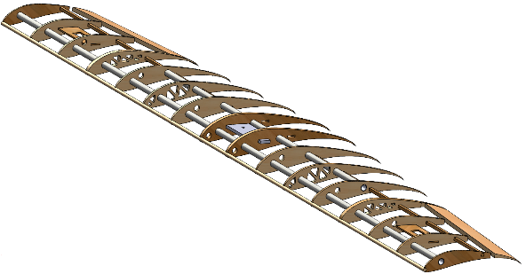
- S1223 (120%) chosen after parametric CFD & wind-tunnel correlation.
- Span: 1000 mm; root chord: 200 mm; MAC ≈ 176.19 mm. Aileron sizing validated in XFLR5.
- Topology-optimised ribs, laser-cut skeleton, and aeroply plates for mounting produced consistent, lightweight builds.
Full UAV Aerodynamics
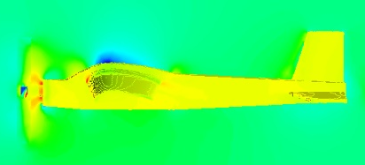
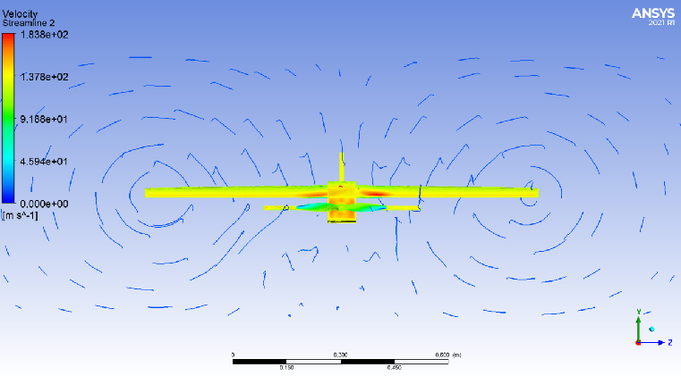
- Full-body CFD simulations with propeller effects integrated to characterize complete UAV aerodynamic behavior.
Fuselage
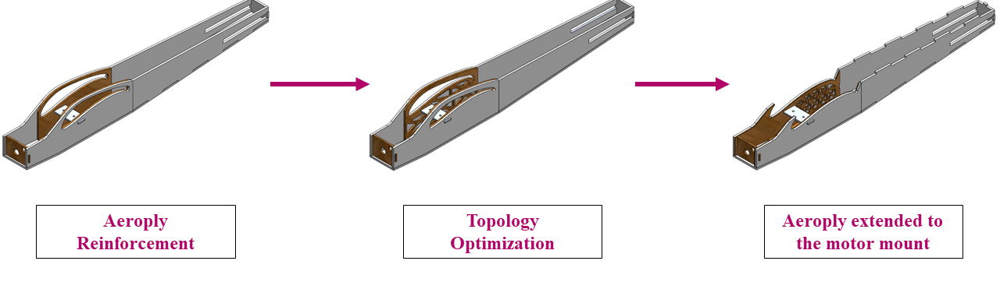
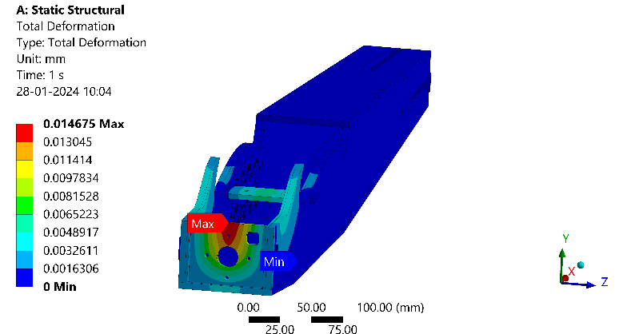
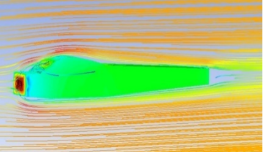
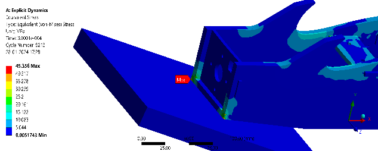
- Length 768 mm; max equivalent diameter 115 mm; fineness ratio ≈ 6.67.
- Static FEA confirmed critical mounts withstand competition loads with comfortable margins.
Stability & Control
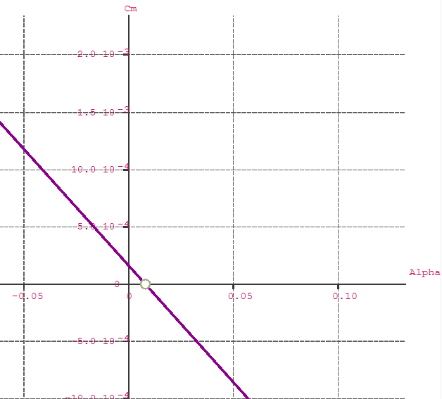
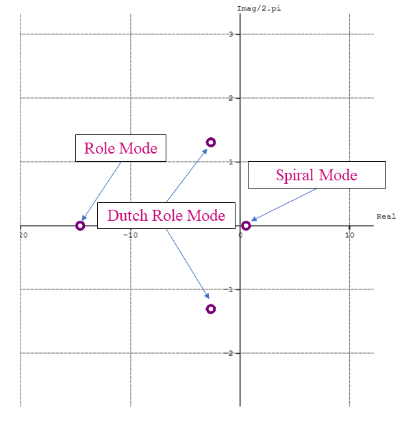
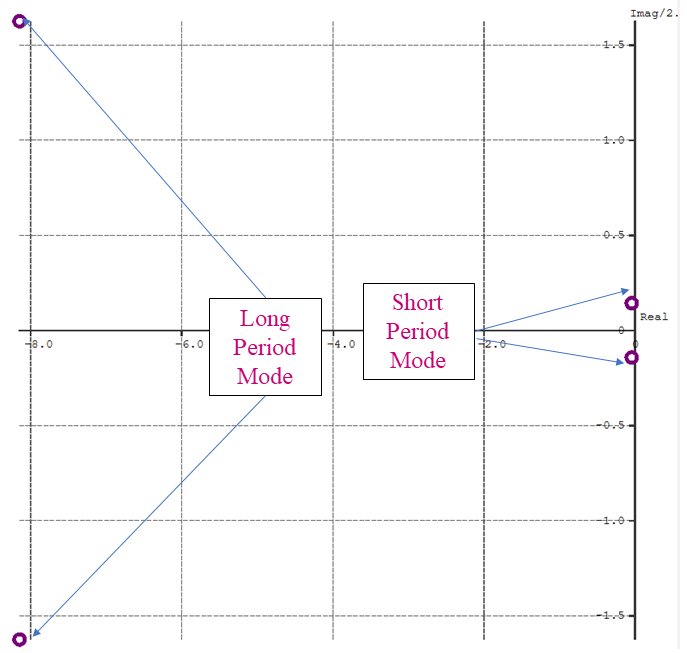
- Static margin ≈ 24.08% (within design target).
- Longitudinal and most lateral modes stable; spiral mode slightly right of origin but acceptable for this package.
Testing & Validation
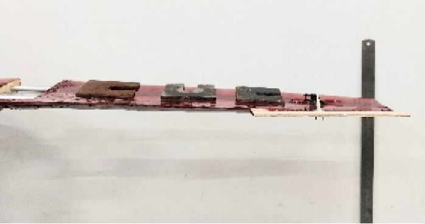
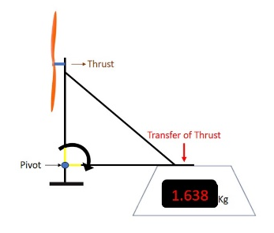
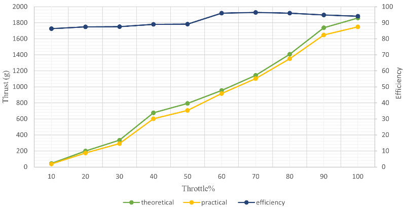
- Wind-tunnel Cp measurements matched CFD trends; tuft testing confirmed stall locations.
- Thrust bench measured 15.07 N for the selected motor/prop configuration.